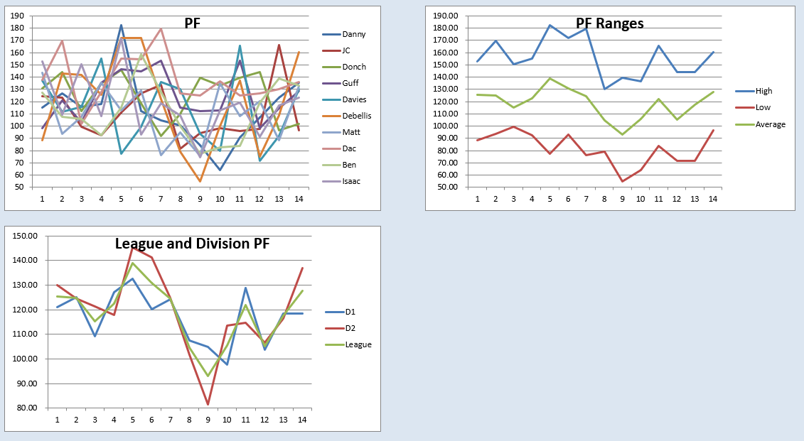
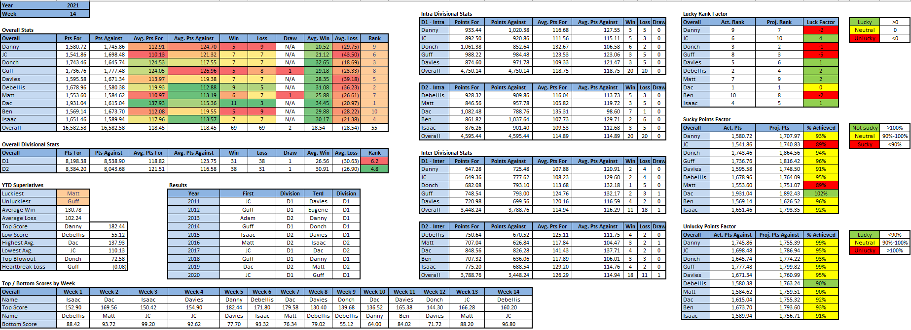

Power Rankings
WEEK 14 POWER RANKINGS
I should have never doubted you
- Dac (-): As predicted 9 weeks ago, Dac finished the season with the D2 bye, the best record in the league, and a clear path to his second championship in 3 years. Dac’s 138 pts/week average was 13 pts/week higher than Donch’s 2nd highest scoring team and a whopping 28 pts/week higher than low scorer JC. Not only was Dac the only person to not score below 100 this year, he only scored below 125 once. Unlike literally everyone else in the league, anything less than a championship will be a disappointment.
- Debellis (-): Debellis finished the season with a 2 game win streak and the 2nd best record in the league. Unfortunately for him, the 2nd best record doesn’t always equal the 2nd bye. Debellis enters the playoffs as the 3 seed, which is prime position for him to end up in the Adam Bowl for the 3rd straight time in his 3rd season. At this rate, a bowl name change might be in the cards to acknowledge the king of mediocrity.
- Donch (-): With everything to play for and back to back matchups against D2’s worst teams, Donch managed to average 99 pts/week over the final 2 weeks and somehow backdoor his way into the D1 bye, proving the massive inferiority of D1. Donch won the bye due to his weekly beatdowns of D1 trash teams, going 6-2 vs. D1 but only 1-5 vs. the D2 gauntlet. If Donch finds himself lucky enough to play a D1 team in the semifinal, he’ll be smooth sailing to his D2 beatdown in the final.
- Isaac (-): Isaac’s team played exactly as expected this week in his narrow loss to the Terd. Williams and DK both completely underwhelmed, and Khunt promptly got hurt in his game keeping Isaac’s debilitating streak of 1st quarter player departures alive. Both of Isaac’s TE1s were also hurt, forcing him to start Ricky Sucks Jones and his 1.3 points. Should Isaac have any players left for his playoff matchup vs. Davies, his JV squad should be easily defeated en route to his date with Debellis in the Adam Bowl.
- Davies (-1): In a must win game for the D1 bye, Davies came up very short against Debellis. He finally started the right QB, a feat which took him all season and rewarded him with an extra 1.5 points. Despite finishing the season on a 3 game losing streak, Davies finds himself in the enviable position of both making the playoffs and getting to face whatever remnants of Isaac’s team exist in the playoffs. Having one of the streakier teams in the league, Davies is usually a coin toss to score 130+ or <100, either of which should be good enough to sneak past Isaac.
- JC (-): Needing only a win and some help to secure the D1 bye, JC lost for the 2nd time in 3 weeks to Matt’s dump squad. In the end, it was still enough to make the playoffs, but it is the difference between a bye and the 6 seed. JC’s team has only broken 100 once in the past 7 weeks and will need to tap into his rich playoff experience for a Cinderella run.
- Matt (-): Matt finished the season winning 5 of his last 6 games, coming up just short of sneaking into the playoffs and instead being the top seed in the dumps. Ultimately, Matt was only 0.01 week 4 pts shy of making the playoffs and avoiding the possible disastrous scenario of being a Terd dad. Matt begins the loser’s bracket with a matchup against equally hot Ben, battling for the chance to avoid playing Terd bowl vet Danny for the Terd title.
- Guff (+1): Guff got to finish his season on a high note, beating Isaac’s hurt boyz by 5 points. It was a completely meaningless game for both parties, apart from the possible momentum it could give Guff going into his second consecutive year in the dumps. The stakes have never been higher, as not once in the decade long history of the league has there ever been a repeat terd. Guff has the chance to make the worst kind of history. No pressure.
- Danny (-1): Danny lost to fantasy juggernaut Dac this week by <1 point in the waning minutes of MNF after posting his highest weekly score since week 5. Like a mouse being toyed with by a cat prior to its inevitable mauling, Dac let Danny stay in the game just long enough to have a glimmer of hope before Cooper Kupping him to death. Danny stayed true to himself this year, putting forth one of the dumpiest streaks of all time, going 1-6 to end the season, with his only victory against the Terd. A little bit of luck is all that kept Danny from picking up his 3rd RST, and he’s going to need a lot more than that to avoid his third Terd crown and Terd dad status.
- Ben (-): It was too little too late for Ben this year, as his 3 game win streak to finish the season was not enough to keep him from his first RST. It was only a matter of a dozen points bringing this great shame on Ben instead of Danny, and one that could’ve been easily avoided had Ben started a full lineup in any of his first half of the year games. The good news for Ben is that he’s the hottest team in the dumps, but the bad news is the dumps is a cold, cold, place.

